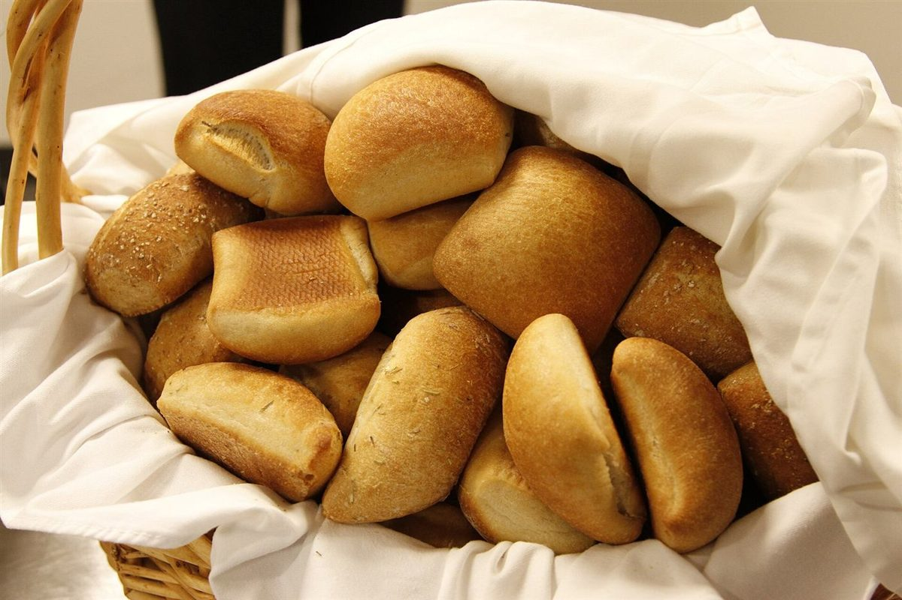

南 / 口コミ
こんな声があるかもしれない
パン屋という業種から自然に想像できる声を、制作側が創作したものです。
以下は制作側が考えた創作のイメージ例で、実在のお客様の投稿ではありません。実際の口コミ・評価とは関係ありません。
焼き上がりの時間に近づくと、ふわっと香りが外まで届いて、つい足を向けてしまいそうなお店です。
のどかな景色のなかにあって、パンを選ぶ時間までゆったり流れていそうだと思いました。また立ち寄りたくなります。
家に帰って袋を開けたとき、お店の香りがまた広がりそうです。家族みんなで食べる朝を楽しみにしたくなります。
